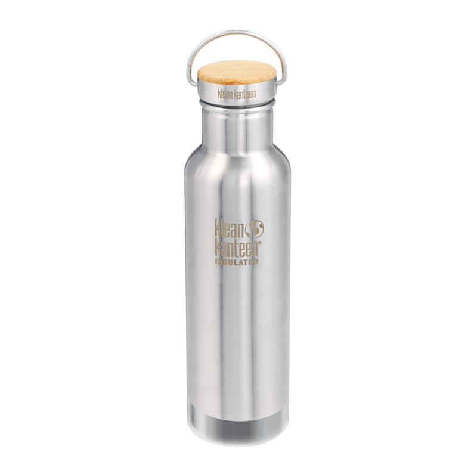
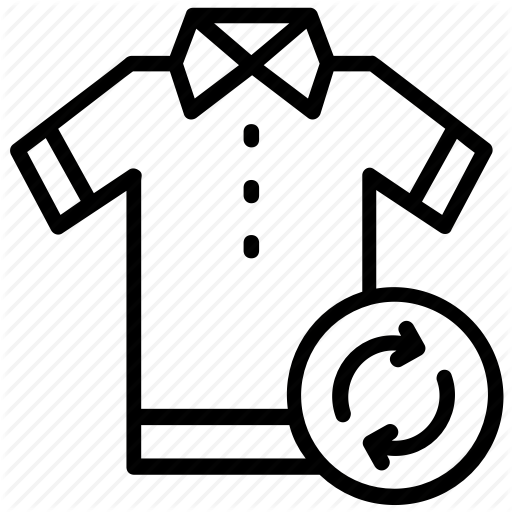
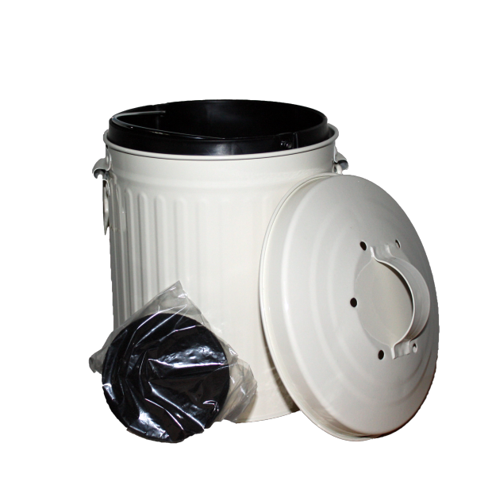
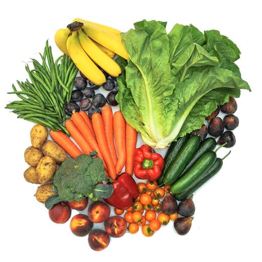
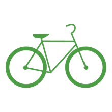

Use a reusable stainless steel or glass water bottle 
Try using glass or metal containers to store food instead of plastic bags or saran wrap
Anything from clothes to appliances to bikes can be bought pre-owned. You don't have to compromise quality to reduce waste. 
Composting is a great way to reduce waste. Contribute to a community collection bin, or use it for your own garden. 
Buying locally grown food reduces pollution and waste created by transporting goods long distances. 
Try walking, biking, or taking public transportation when possible. 